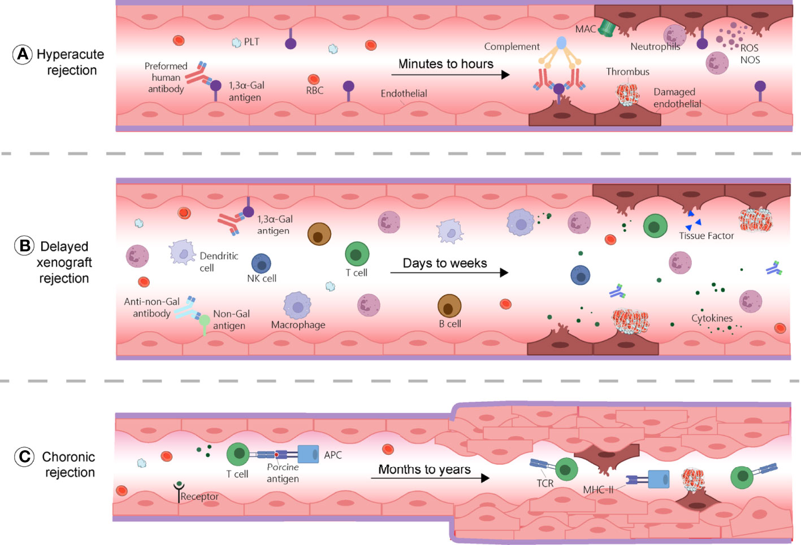
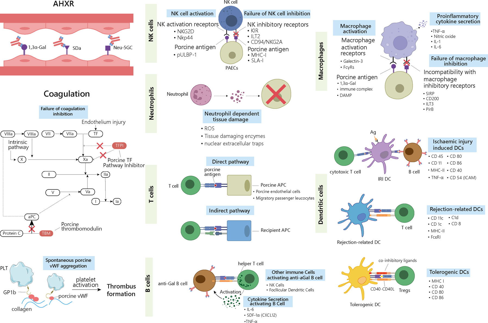
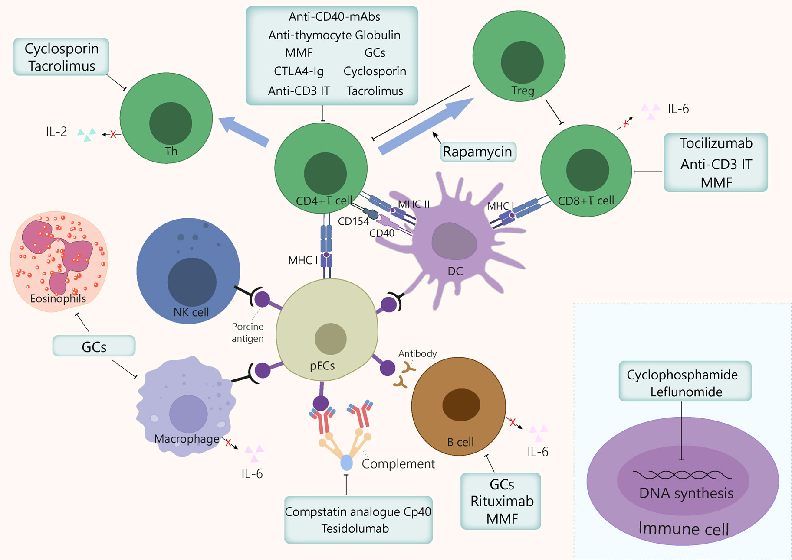

Current status of xenotransplantation research and the strategies for preventing xenograft rejection(Review)
Zhou et al.,(2022)



NK cell
NK cells mediate xenograft rejection by direct NK cell cytotoxicity (NKCC) or ADCC. Upon direct contact with the target cells, NK cells deploy cytotoxic functions by engaging a series of activating and inhibitory receptors and ligands (53).
Macrophage
macrophages are licensed to process and present xenoantigens, promote the differentiation of pro- inflammatory T helper 1 (Th1) and T helper 17 (Th17) by producing interleukin-12 (IL-12), and exert direct cytotoxicity by producing proinflammatory cytokines such as tumour necrosis factor a (TNFa), IL-1, IL-6, and nitric oxide (84, 85).
- CD47
- Interspecies incompatibility of CD47 was also reported to contribute significantly to macrophage-mediated rejection of xenogeneic cells.
- That is, in a human macrophage-like cell line, porcine CD47 does not stimulate the inhibitory receptor signal-regulatory protein a (SIRPa), while soluble human CD47-Fc fusion protein does, which inhibits porcine cell phagocytosis (86).